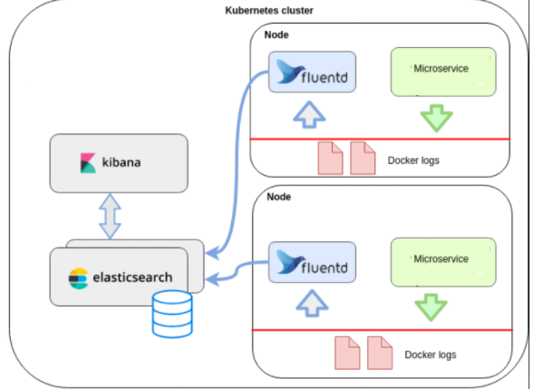
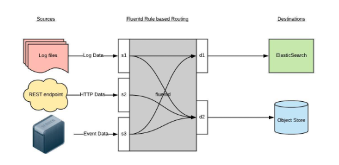
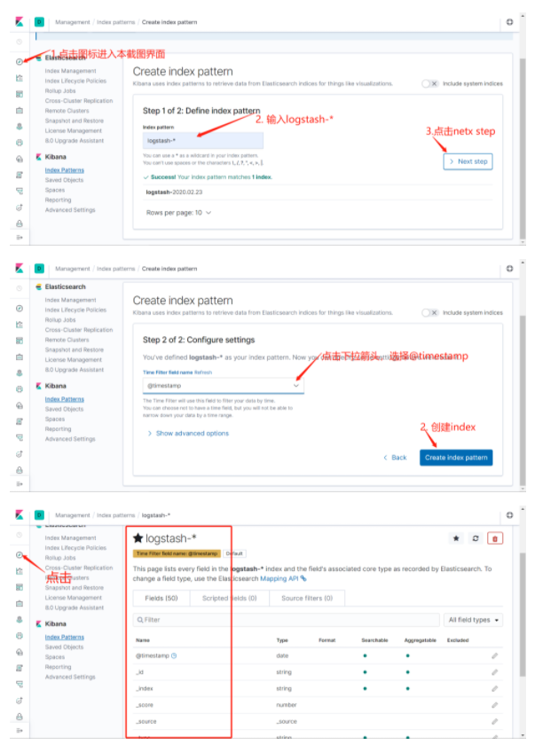
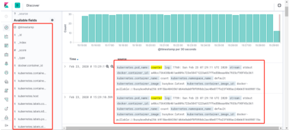

基于EFK实现kubernetes集群的日志平台（扩展）
EFK介绍
EFK工作示意

一个开源的分布式、Restful 风格的搜索和数据分析引擎，它的底层是开源库Apache Lucene。它可以被下面这样准确地形容：
| Text Only |
|---|
| - <font style="color:rgb(51, 51, 51);">一个分布式的实时文档存储，每个字段可以被索引与搜索；</font>
- <font style="color:rgb(51, 51, 51);">一个分布式实时分析搜索引擎；</font>
- <font style="color:rgb(51, 51, 51);">能胜任上百个服务节点的扩展，并支持 PB 级别的结构化或者非结构化数据。</font>
|
一个针对日志的收集、处理、转发系统。通过丰富的插件系统，可以收集来自于各种系统或应用的日志，转化为用户指定的格式后，转发到用户所指定的日志存储系统之中。

- Fluentd 通过一组给定的数据源抓取日志数据，处理后（转换成结构化的数据格式）将它们转发给其他服务，比如 Elasticsearch、对象存储、kafka等等。Fluentd 支持超过300个日志存储和分析服务，所以在这方面是非常灵活的。主要运行步骤如下
- 首先 Fluentd 从多个日志源获取数据
- 结构化并且标记这些数据
- 然后根据匹配的标签将数据发送到多个目标服务
- Kibana
Kibana是一个开源的分析和可视化平台，设计用于和Elasticsearch一起工作。可以通过Kibana来搜索，查看，并和存储在Elasticsearch索引中的数据进行交互。也可以轻松地执行高级数据分析，并且以各种图标、表格和地图的形式可视化数据。
部署es服务
部署分析
- es生产环境是部署es集群，通常会使用statefulset进行部署，此例由于演示环境资源问题，部署为单点
- 数据存储挂载主机路径
- es默认使用elasticsearch用户启动进程，es的数据目录是通过宿主机的路径挂载，因此目录权限被主机的目录权限覆盖，因此可以利用init container容器在es进程启动之前把目录的权限修改掉，注意init container要用特权模式启动。
部署并验证
<font style="color:rgb(51, 51, 51);background-color:rgb(243, 244, 244);">efk/elasticsearch.yaml</font>
| YAML |
|---|
| apiVersion: apps/v1
kind: StatefulSet
metadata:
labels:
addonmanager.kubernetes.io/mode: Reconcile
k8s-app: elasticsearch-logging
version: v7.4.2
name: elasticsearch-logging
namespace: logging
spec:
replicas: 1
revisionHistoryLimit: 10
selector:
matchLabels:
k8s-app: elasticsearch-logging
version: v7.4.2
serviceName: elasticsearch-logging
template:
metadata:
labels:
k8s-app: elasticsearch-logging
version: v7.4.2
spec:
nodeSelector:
log: "true" ## 指定部署在哪个节点。需根据环境来修改
containers:
- env:
- name: NAMESPACE
valueFrom:
fieldRef:
apiVersion: v1
fieldPath: metadata.namespace
- name: cluster.initial_master_nodes
value: elasticsearch-logging-0
- name: ES_JAVA_OPTS
value: "-Xms512m -Xmx512m"
image: 172.21.32.6:5000/elasticsearch/elasticsearch:7.4.2
name: elasticsearch-logging
ports:
- containerPort: 9200
name: db
protocol: TCP
- containerPort: 9300
name: transport
protocol: TCP
volumeMounts:
- mountPath: /usr/share/elasticsearch/data
name: elasticsearch-logging
dnsConfig:
options:
- name: single-request-reopen
initContainers:
- command:
- /sbin/sysctl
- -w
- vm.max_map_count=262144
image: alpine:3.6
imagePullPolicy: IfNotPresent
name: elasticsearch-logging-init
resources: {}
securityContext:
privileged: true
- name: fix-permissions
image: alpine:3.6
command: ["sh", "-c", "chown -R 1000:1000 /usr/share/elasticsearch/data"]
securityContext:
privileged: true
volumeMounts:
- name: elasticsearch-logging
mountPath: /usr/share/elasticsearch/data
volumes:
- name: elasticsearch-logging
hostPath:
path: /esdata
---
apiVersion: v1
kind: Service
metadata:
labels:
k8s-app: elasticsearch-logging
name: elasticsearch
namespace: logging
spec:
ports:
- port: 9200
protocol: TCP
targetPort: db
selector:
k8s-app: elasticsearch-logging
type: ClusterIP
|
| YAML |
|---|
| $ kubectl create namespace logging
## 给slave1节点打上label，将es服务调度到slave1节点
$ kubectl label node k8s-slave1 log=true
## 部署服务，可以先去部署es的节点把镜像下载到本地
$ kubectl create -f elasticsearch.yaml
statefulset.apps/elasticsearch-logging created
service/elasticsearch created
## 等待片刻，查看一下es的pod部署到了k8s-slave1节点，状态变为running
$ kubectl -n logging get po -o wide
NAME READY STATUS RESTARTS AGE IP NODE
elasticsearch-logging-0 1/1 Running 0 69m 10.244.1.104 k8s-slave1
# 然后通过curl命令访问一下服务，验证es是否部署成功
$ kubectl -n logging get svc
NAME TYPE CLUSTER-IP EXTERNAL-IP PORT(S) AGE
elasticsearch ClusterIP 10.109.174.58 <none> 9200/TCP 71m
$ curl 10.109.174.58:9200
{
"name" : "elasticsearch-logging-0",
"cluster_name" : "docker-cluster",
"cluster_uuid" : "uic8xOyNSlGwvoY9DIBT1g",
"version" : {
"number" : "7.4.2",
"build_flavor" : "default",
"build_type" : "docker",
"build_hash" : "2f90bbf7b93631e52bafb59b3b049cb44ec25e96",
"build_date" : "2019-10-28T20:40:44.881551Z",
"build_snapshot" : false,
"lucene_version" : "8.2.0",
"minimum_wire_compatibility_version" : "6.8.0",
"minimum_index_compatibility_version" : "6.0.0-beta1"
},
"tagline" : "You Know, for Search"
}
|
部署kibana
部署分析
- kibana需要暴漏web页面给前端使用，因此使用ingress配置域名来实现对kibana的访问
- kibana为无状态应用，直接使用Deployment来启动
- kibana需要访问es，直接利用k8s服务发现访问此地址即可，http://elasticsearch:9200
部署并验证
资源文件 <font style="color:rgb(51, 51, 51);background-color:rgb(243, 244, 244);">efk/kibana.yaml</font>
| YAML |
|---|
| apiVersion: apps/v1
kind: Deployment
metadata:
name: kibana
namespace: logging
labels:
app: kibana
spec:
selector:
matchLabels:
app: kibana
template:
metadata:
labels:
app: kibana
spec:
containers:
- name: kibana
image: 172.21.32.6:5000/kibana/kibana:7.4.2
resources:
limits:
cpu: 1000m
requests:
cpu: 100m
env:
- name: ELASTICSEARCH_URL
value: http://elasticsearch:9200
ports:
- containerPort: 5601
---
apiVersion: v1
kind: Service
metadata:
name: kibana
namespace: logging
labels:
app: kibana
spec:
ports:
- port: 5601
protocol: TCP
targetPort: 5601
type: ClusterIP
selector:
app: kibana
---
apiVersion: extensions/v1beta1
kind: Ingress
metadata:
name: kibana
namespace: logging
spec:
rules:
- host: kibana.devops.cn
http:
paths:
- path: /
backend:
serviceName: kibana
servicePort: 5601
|
| YAML |
|---|
| $ kubectl create -f kibana.yaml
deployment.apps/kibana created
service/kibana created
ingress/kibana created
# 然后查看pod，等待状态变成running
$ kubectl -n logging get po
NAME READY STATUS RESTARTS AGE
elasticsearch-logging-0 1/1 Running 0 88m
kibana-944c57766-ftlcw 1/1 Running 0 15m
## 配置域名解析 kibana.devops.cn，并访问服务进行验证，若可以访问，说明连接es成功
|
部署fluentd
部署分析
- fluentd为日志采集服务，kubernetes集群的每个业务节点都有日志产生，因此需要使用daemonset的模式进行部署
- 为进一步控制资源，会为daemonset指定一个选择表情，fluentd=true来做进一步过滤，只有带有此标签的节点才会部署fluentd
- 日志采集，需要采集哪些目录下的日志，采集后发送到es端，因此需要配置的内容比较多，我们选择使用configmap的方式把配置文件整个挂载出来
部署服务
配置文件，<font style="color:rgb(51, 51, 51);background-color:rgb(243, 244, 244);">efk/fluentd-es-main.yaml</font>
| YAML |
|---|
| apiVersion: v1
data:
fluent.conf: |-
# This is the root config file, which only includes components of the actual configuration
#
# Do not collect fluentd's own logs to avoid infinite loops.
<match fluent.**>
@type null
</match>
@include /fluentd/etc/config.d/*.conf
kind: ConfigMap
metadata:
labels:
addonmanager.kubernetes.io/mode: Reconcile
name: fluentd-es-config-main
namespace: logging
|
配置文件，fluentd-config.yaml，注意点：
- 数据源source的配置，k8s会默认把容器的标准和错误输出日志重定向到宿主机中
- 默认集成了 kubernetes_metadata_filter 插件，来解析日志格式，得到k8s相关的元数据，raw.kubernetes
- match输出到es端的flush配置
| YAML |
|---|
| kind: ConfigMap
apiVersion: v1
metadata:
name: fluentd-config
namespace: logging
labels:
addonmanager.kubernetes.io/mode: Reconcile
data:
system.conf: |-
<system>
root_dir /tmp/fluentd-buffers/
</system>
containers.input.conf: |-
<source>
@id fluentd-containers.log
@type tail
path /var/log/containers/*.log
pos_file /var/log/es-containers.log.pos
time_format %Y-%m-%dT%H:%M:%S.%NZ
localtime
tag raw.kubernetes.*
format json
read_from_head true
</source>
# Detect exceptions in the log output and forward them as one log entry.
<match raw.kubernetes.**>
@id raw.kubernetes
@type detect_exceptions
remove_tag_prefix raw
message log
stream stream
multiline_flush_interval 5
max_bytes 500000
max_lines 1000
</match>
forward.input.conf: |-
# Takes the messages sent over TCP
<source>
@type forward
</source>
output.conf: |-
# Enriches records with Kubernetes metadata
<filter kubernetes.**>
@type kubernetes_metadata
</filter>
<match **>
@id elasticsearch
@type elasticsearch
@log_level info
include_tag_key true
host elasticsearch
port 9200
logstash_format true
request_timeout 30s
<buffer>
@type file
path /var/log/fluentd-buffers/kubernetes.system.buffer
flush_mode interval
retry_type exponential_backoff
flush_thread_count 2
flush_interval 5s
retry_forever
retry_max_interval 30
chunk_limit_size 2M
queue_limit_length 8
overflow_action block
</buffer>
</match>
|
daemonset定义文件，fluentd.yaml，注意点：
- 需要配置rbac规则，因为需要访问k8s api去根据日志查询元数据
- 需要将/var/log/containers/目录挂载到容器中
- 需要将fluentd的configmap中的配置文件挂载到容器内
- 想要部署fluentd的节点，需要添加fluentd=true的标签
<font style="color:rgb(51, 51, 51);background-color:rgb(243, 244, 244);">efk/fluentd.yaml</font>
| YAML |
|---|
| apiVersion: v1
kind: ServiceAccount
metadata:
name: fluentd-es
namespace: logging
labels:
k8s-app: fluentd-es
kubernetes.io/cluster-service: "true"
addonmanager.kubernetes.io/mode: Reconcile
---
kind: ClusterRole
apiVersion: rbac.authorization.k8s.io/v1
metadata:
name: fluentd-es
labels:
k8s-app: fluentd-es
kubernetes.io/cluster-service: "true"
addonmanager.kubernetes.io/mode: Reconcile
rules:
- apiGroups:
- ""
resources:
- "namespaces"
- "pods"
verbs:
- "get"
- "watch"
- "list"
---
kind: ClusterRoleBinding
apiVersion: rbac.authorization.k8s.io/v1
metadata:
name: fluentd-es
labels:
k8s-app: fluentd-es
kubernetes.io/cluster-service: "true"
addonmanager.kubernetes.io/mode: Reconcile
subjects:
- kind: ServiceAccount
name: fluentd-es
namespace: logging
apiGroup: ""
roleRef:
kind: ClusterRole
name: fluentd-es
apiGroup: ""
---
apiVersion: apps/v1
kind: DaemonSet
metadata:
labels:
addonmanager.kubernetes.io/mode: Reconcile
k8s-app: fluentd-es
name: fluentd-es
namespace: logging
spec:
selector:
matchLabels:
k8s-app: fluentd-es
template:
metadata:
labels:
k8s-app: fluentd-es
spec:
containers:
- env:
- name: FLUENTD_ARGS
value: --no-supervisor -q
image: 172.21.32.6:5000/fluentd-es-root:v1.6.2-1.0
imagePullPolicy: IfNotPresent
name: fluentd-es
resources:
limits:
memory: 500Mi
requests:
cpu: 100m
memory: 200Mi
volumeMounts:
- mountPath: /var/log
name: varlog
- mountPath: /var/lib/docker/containers
name: varlibdockercontainers
readOnly: true
- mountPath: /home/docker/containers
name: varlibdockercontainershome
readOnly: true
- mountPath: /fluentd/etc/config.d
name: config-volume
- mountPath: /fluentd/etc/fluent.conf
name: config-volume-main
subPath: fluent.conf
nodeSelector:
fluentd: "true"
securityContext: {}
serviceAccount: fluentd-es
serviceAccountName: fluentd-es
volumes:
- hostPath:
path: /var/log
type: ""
name: varlog
- hostPath:
path: /var/lib/docker/containers
type: ""
name: varlibdockercontainers
- hostPath:
path: /home/docker/containers
type: ""
name: varlibdockercontainershome
- configMap:
defaultMode: 420
name: fluentd-config
name: config-volume
- configMap:
defaultMode: 420
items:
- key: fluent.conf
path: fluent.conf
name: fluentd-es-config-main
name: config-volume-main
|
| YAML |
|---|
| ## 给slave1和slave2打上标签，进行部署fluentd日志采集服务
$ kubectl label node k8s-slave1 fluentd=true
node/k8s-slave1 labeled
$ kubectl label node k8s-slave2 fluentd=true
node/k8s-slave2 labeled
# 创建服务
$ kubectl create -f fluentd-es-config-main.yaml
configmap/fluentd-es-config-main created
$ kubectl create -f fluentd-configmap.yaml
configmap/fluentd-config created
$ kubectl create -f fluentd.yaml
serviceaccount/fluentd-es created
clusterrole.rbac.authorization.k8s.io/fluentd-es created
clusterrolebinding.rbac.authorization.k8s.io/fluentd-es created
daemonset.extensions/fluentd-es created
## 然后查看一下pod是否已经在k8s-slave1和k8s-slave2节点启动成功
$ kubectl -n logging get po -o wide
NAME READY STATUS RESTARTS AGE
elasticsearch-logging-0 1/1 Running 0 123m
fluentd-es-246pl 1/1 Running 0 2m2s
fluentd-es-4e21w 1/1 Running 0 2m10s
kibana-944c57766-ftlcw 1/1 Running 0 50m
|
EFK功能验证
验证思路
k8s-slave1和slave2中启动服务，同时往标准输出中打印测试日志，到kibana中查看是否可以收集
创建测试容器
| YAML |
|---|
| apiVersion: v1
kind: Pod
metadata:
name: counter
spec:
nodeSelector:
fluentd: "true"
containers:
- name: count
image: alpine:3.6
args: [/bin/sh, -c,
'i=0; while true; do echo "$i: $(date)"; i=$((i+1)); sleep 1; done']
|
| YAML |
|---|
| $ kubectl get po
NAME READY STATUS RESTARTS AGE
counter 1/1 Running 0 6s
|
配置kibana
登录kibana界面，按照截图的顺序操作：

也可以通过其他元数据来过滤日志数据，比如可以单击任何日志条目以查看其他元数据，如容器名称，Kubernetes 节点，命名空间等，比如kubernetes.pod_name : counter
到这里，我们就在 Kubernetes 集群上成功部署了 EFK ，要了解如何使用 Kibana 进行日志数据分析，可以参考 Kibana 用户指南文档：https://www.elastic.co/guide/en/kibana/current/index.html